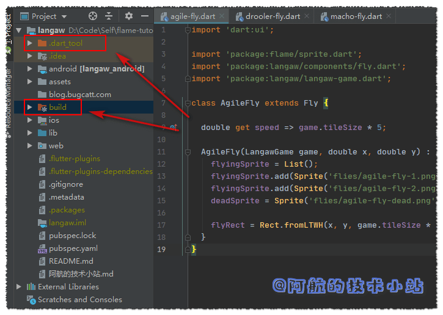
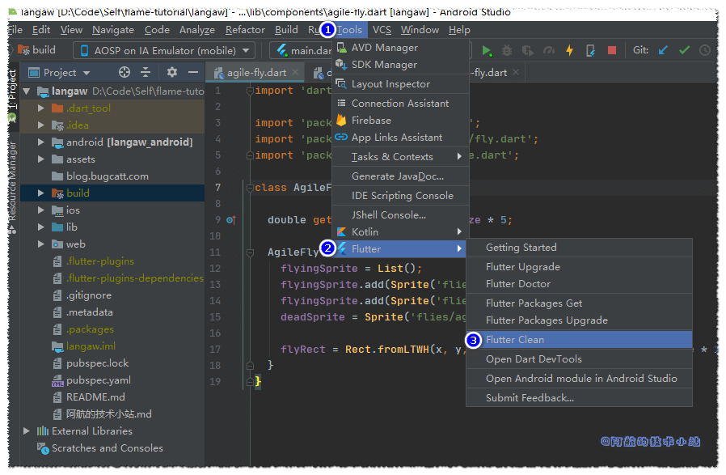

在使用Flutter进行开发时, 经常会产生很多的编译缓存文件, 比如:

这样可以加快下次的编译速度. 但有时会出现一些我们神奇的报错, 很有可能是缓存不兼容所造成的! 有时出现的无解bug, 重启一下IDE或模拟器, 清理一下缓存就会被解决… 别问, 问就是阿航踩过好几次坑😢😢😢😢
这一篇就会讲如何清理flutter的编译缓存. (不是APP的数据缓存, 别弄混!)
方法一: IDE自带清理按钮
这里拿官方推荐的Android Studio举例:

方法二: 使用命令行清理
使用终端(cmd)进入项目目录.
输入清理命令:
flutter clean
清理完成
清理完成后, 可以看到之前的.dart_tool以及build目录被清理干净, 下次编译会从0开始. 也可能顺便解决你的一些未知bug😜
结语
本篇文章来自阿航的技术小站 .
对文章有任何问题, 欢迎在下方评论区进行讨论. 阿航会尽力回复.